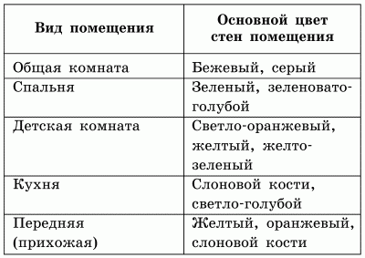

Материалы для отделки.

Новичок в строительном деле теряется, когда попадает в специализированный магазин. Это и понятно, в последнее время рынок переполнен товарами отечественного и зарубежного производства. Однако здесь снова вспоминается поговорка «Не все то золото, что блестит». Если на упаковке указано, что данный материал произведен во Франции, это еще не говорит о его высоком качестве.
Нет смысла выяснять это у продавцов. Лучше всего обратиться в ближайшую строительную фирму: совет по покупке того или иного материала может дать только профессионал. Но и в этом случае действует простое правило: чем качественнее продукция, тем выше ее цена.
Немногие могут сразу решиться на кардинальные преобразования в интерьере своей квартиры – такие, как изменение формы стены на овальную, покрытие ее декоративной штукатуркой и последующее окрашивание в оранжевый цвет. Поэтому желательно начинать с элементарного, а затем, войдя во вкус, вы, возможно, решитесь на что-нибудь экстравагантное. Экспериментируйте, не забывая при этом о целесообразности тех или иных нововведений.
Следует отметить, что самые доступные по цене отделочные материалы – это обои и некоторые виды красок. Также сравнительно недорого стоят материалы из стекла. Работать с ними достаточно легко. Вы можете монтировать стекло на штукатурку или ДВП. При желании можно целиком выложить стену из стекла, воспользовавшись для этого стеклоблоками (информацию об этом материале можно найти в соответствующей главе).
Вместо дорогих стеновых панелей можно воспользоваться пластиковыми. Они изготовлены на основе винила – пластичного и водостойкого материала. Кроме того, покупателей привлекают и другие качества этого покрытия: его дешевизна, богатая палитра цветов, гибкость, благодаря чему вы можете придать ему любую форму. Но есть и недостатки: виниловые покрытия не пропускают воздух, горючи, в их составе присутствуют вещества, вредные для здоровья.
Цвет в жизни человекаУ каждого человека есть свой любимый цвет, которому зачастую отдается предпочтение и при оформлении интерьера. Определенная цветовая гамма может оказывать положительное влияние на психику и свойства того или иного цвета, что психологи нередко используют во время лечебных сеансов. Так, воздействие некоторых цветов способно улучшить самочувствие, нормализовать деятельность нервной системы, артериальное давление и т. д. Однако следует учитывать индивидуальное восприятие разными людьми одного и того же цвета. Так, например, детская комната, окрашенная в розовый цвет, может вызывать негативные эмоции и ощущения у кого-либо из членов семьи, несмотря на то что сам по себе розовый цвет является успокаивающим.
Исследования, проведенные в нашей стране и за рубежом, установили характер воздействия некоторых цветов, их сочетаний и оттенков на работоспособность человека и его нервную систему. Так, разные цвета способствуют тому, что нам хочется беспричинно смеяться или плакать, радоваться или грустить.
Возбуждающе действует красный цвет, однако это действие носит несколько принудительный, даже навязчивый характер. Непродолжительное воздействие красного цвета повышает работоспособность, а более длительное приводит к снижению работоспособности и утомлению. Пульс у человека, находящегося под воздействием красного цвета, учащен, дыхание несколько затруднено.
Желтый и оранжевый цвета оказывают, как правило, положительное влияние на психику, способствуют активной физической и умственной деятельности, поднимают настроение, но только при условии кратковременного воздействия. Светло-оранжевый цвет считается наиболее благоприятным для детей, улучшая их физиологические функ-ции, способствуя большей подвижности и повышению настроения. Оттенки желтого цвета создают впечатление яркого естественного освещения.
Более нейтральным считается зеленый цвет. Он действует успокаивающе даже в том случае, если воздействие этого цвета было более чем продолжительным. Зеленый цвет также может способствовать повышению работоспособности (в меньшей степени, чем красный или оранжевый, но более устойчиво). Ученые выдвинули гипотезу, что человечество за многие тысячелетия своего развития лучше всего адаптировалось к этому цвету – цвету живой растительности.
В сочетании с другими цветами зеленый цвет по-разному влияет на человека. Так, в сочетании с синим цветом он уравновешивает эмоциональное состояние, в сочетании с желтым поднимает настроение, а ярко-зеленый цвет вызывает скрытую агрессию. Именно поэтому в спальне лучше не окрашивать стены в такой цвет, иначе бессонница вам гарантирована. Кроме того, считается, что зеленый цвет способен подавлять нежные чувства молодых супругов.
Ощущение тепла, уюта и спокойное настроение вызывает коричневый цвет. Американские психологи при проведении специальных исследований даже пришли к выводу о том, что стены спальни предпочтительнее окрашивать именно в темно-коричневый цвет: как оказалось, он способствует быстрому погружению в сон лучше любого сно-творного средства.
Ощущение прохлады, спокойствия, чувство нежности и умиротворенности, мечтательное настроение – все это вызывает голубой цвет. Он способен замедлять все естественные психические процессы и снимать эмоциональное напряжение.
Такими же свойствами обладают синий и сине-зеленый цвета. Под его влиянием возникает склонность к размышлениям, мечтательности. Дыхание и пульс несколько замедляются, работоспособность снижается.
Однако самым пассивным считается фиолетовый цвет. Продолжительное воздействие фиолетового цвета действует на психику угнетающе, приводит к ослаблению и подавлению жизненных процессов, а кратковременное – снижает работоспособность.
Так же подавляюще действует на эмоциональное состояние человека и серый цвет. Помимо этого, он вызывает уныние, тоску.
Белый цвет является символом чистоты, невинности, простоты. В то же время он создает впечатление праздничности и даже торжественности. Кроме того, любые светлые цвета зрительно увеличивают пространство, поэтому белому цвету и мягким пастельным оттенкам зачастую отдается предпочтение при оформлении интерьера комнат, в том числе и при отделке стен.
Цвета способны воздействовать и на поведение человека, усиливая или, напротив, угнетая проявление тех или иных черт его личности. По пристрастию человека к определенному цвету можно судить о его характере, привычках, наклонностях.
Лечебное воздействие цветаЦвет оказывает не только эмоциональное воздействие, но также и лечебное. Отдельные цвета могут влиять на человека отрицательно и даже спровоцировать развитие различных заболеваний. Кроме того, цвета автоматически воздействуют на деятельность организма, стимулируя или, напротив, замедляя его функции. От восприятия человеком того или иного цвета может зависеть частота и ритм пульса, дыхания, скорость обмена веществ.
В результате многочисленных исследований был установлен характер лечебного воздействия цветов, оттенков и их сочетаний. Так, красный цвет способствует укреплению памяти, зрения, улучшению цвета кожи, кровообращения, сердечной деятельности, активизации обмена веществ, укреплению иммунитета. Отмечена высокая эффективность этого цвета при лечении вялых параличей.
Оранжевый цвет повышает аппетит, работоспособность, улучшает процесс пищеварения. Он помогает при лечении астмы, бронхита, сердечно-сосудистых заболеваний, патологии селезенки, положительно влияет на сексуальные чувства супругов. Кроме того, оранжевый цвет обладает омолаживающим эффектом.
Желтый цвет оказывает благоприятное воздействие на весь организм в целом. Он стимулирует работу печени, желчного пузыря, помогает при бессоннице, нервном истощении, экземе и дерматите. Кроме того, желтый цвет способствует повышению аппетита: не случайно в этот цвет окрашивают стены большинства ресторанов в Великобритании.
Зеленый цвет положительно влияет на здоровье людей, страдающих различными заболеваниями позвоночника, головными болями, частыми простудными заболеваниями, нарушением обмена веществ. Отличный эффект этого цвета отмечается при лечении болезней сердечно-сосуди-стой системы: артрита, тахикардии и др.
Синий цвет – отличное лечебное средство для человека, которого постоянно мучают головные боли. Перефразируя известную поговорку, можно сказать: «По часу в день – и вы распроститесь с мигренью навсегда». Кроме того, при воздействии этого цвета поддаются лечению все болезни легких, почек, мочевого пузыря, глаз и детские инфекции, а также язвы, желтуха, лишай, экзема, коклюш. Этот цвет способствует понижению аппетита, поэтому синие стены в кухне или столовой являются великолепным средством для борьбы с лишним весом.
Фиолетовый цвет оказывает лечебное воздействие при психических и нервных заболеваниях, болезнях печени, почек, мочевого и желчного пузыря.
Черный цвет поднимает артериальное давление, что очень важно учитывать людям, страдающим гипотонией.
Белый цвет способствует выведению шлаков из организма, успокаивающе действует на нервную систему, придает человеку больше сил и энергии.
Цветовое решение помещенийВсе свойства цветов, перечисленные выше и влияющие на эмоциональное и физическое состояние человека, позволяют выгодно использовать их при отделке стен в квартире.
Отделка стен однокомнатной квартиры должна быть достаточно скромной и по цвету, и по рисунку: ведь в данном случае одна комната выполняет функции по крайней мере трех помещений – гостиной, столовой и спальни. Кроме того, здесь же читают книги и делают уроки. Поэтому лучше всего подобрать для отделки стен комнаты спокойные светло-желтые, серовато-зеленые и серовато-голубые тона.
Стены квартиры или частного дома, где имеется несколько комнат, можно окрашивать более интенсивно. В следующей таблице приведены основные цвета, которые можно использовать в различных помещениях одной квартиры.
Таблица 1. Использование основных цветов в различных помещениях квартиры или дома
Интенсивность окраски стен зависит от высоты и освещенности помещения. Следует также учитывать, что цвета стен и межкомнатных дверей обязательно должны гармонировать между собой. Однако чаще всего бывает по-другому: выбирая те или иные оттенки для отделки стен, мы напрочь забываем о соответствующем цветовом решении для дверей и зачастую окрашиваем их в белый цвет. На насыщенном цветном фоне обоев белые двери выглядят несколько старомодно. Гораздо лучший эффект можно получить, применив при отделке дверей цвет, гармонично сочетающийся с цветом стен.
Можно также окрасить двери в тот же цвет, что и стены, но только более насыщенного оттенка. Тогда двери не будут резко выделяться на фоне стены. Еще один вариант – окрашивание дверей в контрастные стенам цвета или цвета, гармонирующие с цветом мебели в помещении. Например, если стены кухни окрашены в белый цвет, а мебель – в синий, то вполне уместно будет выглядеть на этом фоне дверь синего цвета.
Ниши и приборы отопления окрашивают масляной краской под цвет стен, чтобы они не выделялись на них резким пятном.